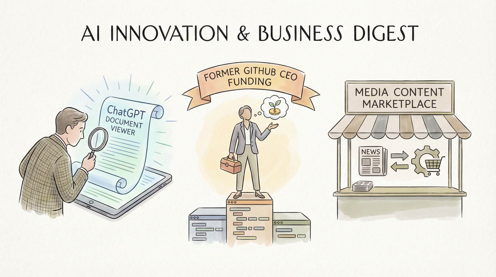

OpenAI更新ChatGPT工具，新增文档查看器功能。
两克伴AIGC日报
2026-02-11 星期三

本期关注：ChatGPT新增文档查看器，前GitHub CEO获6000万美元种子轮融资，亚马逊拟建媒体内容AI交易市场，黑石增持Anthropic至10亿美元，欧盟警告Meta不得阻止WhatsApp竞争AI机器人，同时Llama.cpp支持MCP测试、AI代理用Ghidra从二进制文件找后...
📰 行业动态
前GitHub CEO创立新公司，获得6000万美元种子轮融资。
亚马逊计划推出媒体内容与AI公司交易的市场。
黑石参投Anthropic融资轮，持股规模达10亿美元。
欧盟警告Meta不得阻止WhatsApp上的竞争AI机器人。
🔥 今日焦点
近日，Reddit用户u/jacek2023宣布，经过一个多月的开发，Llama.cpp中的MCP（Message Control Protocol）支持功能已准备就绪，可供测试。此次更新引入了一系列令人印象深刻的新特性，包括：向对话中添加系统消息、在现有对话中注入系统消息、CORS代理、MCP服务器选择器设置、工具调用、Agentic Loop Logic UI、处理统计信息、提示检测逻辑、提示选择器、提示参数表单、聊天表单和聊天消息中的附件、资源浏览器、搜索和文件树视图、资源附件和预览对话框等。
这一更新对于AI领域具有重要意义。首先，MCP支持将有助于提高Llama.cpp的交互性和功能丰富度，为用户提供更加便捷和高效的AI服务。其次，新增的CORS代理、服务器选择器设置等功能，将进一步提升系统的稳定性和安全性。此外，资源浏览器和预览对话框的引入，将极大地方便用户获取和处理信息。
近日，Reddit用户u/likeastar20在quesma.com博客上发布了一项引人注目的研究。该研究将AI代理赋予对Ghidra工具的访问权限，并要求它们仅从服务器二进制文件中寻找隐藏的后门，而无需访问源代码。这一创新性实验不仅揭示了AI在网络安全领域的巨大潜力，也为AI领域的研究提供了新的视角。
这项研究的核心内容是，通过利用AI代理对Ghidra工具的深入理解，研究人员成功地在服务器二进制文件中发现了隐藏的后门。这一成果表明，AI在网络安全领域具有强大的分析能力，能够从大量数据中快速识别潜在的安全威胁。
近日，Reddit用户u/danielhanchen发布了一项关于Mixture of Experts (MoE)模型训练的突破性进展。通过定制Triton内核和数学优化，该技术实现了MoE模型训练速度提升约12倍，同时减少35%的VRAM使用量，并延长了上下文长度约6倍，且不损失精度。这一成果主要得益于Unsloth库的更新，该库现支持包括gpt-oss、Qwen3、DeepSeek R1/V3和GLM等MoE架构的快速训练。例如，gpt-oss-20b模型在12.8GB VRAM下进行微调，而Qwen3-30B-A3B（16位LoRA）模型则仅需63GB VRAM。此外，该技术适用于数据中心、消费级和老旧GPU（如RTX 3090），以及FFT、LoRA和QLoRA等模型。随着模型规模和上下文长度的增加，Unsloth内核带来的内存节省效果将更加显著。这一突破性进展将对AI领域产生深远影响，提高MoE模型训练的效率和可扩展性。
📚 深度长文
在最新的科技洞察文章《We Just Got a Peek at How Crazy a World With AI Agents May Be》中，作者Steve Newman深入探讨了独立人工智能代理的未来可能性。文章以Clawdbot和Moltbook这两个虚拟角色为例，揭示了人工智能在自主决策、社会互动和道德伦理等方面的潜在挑战。通过对这两个角色的行为分析，Newman指出，随着AI技术的发展，一个由独立AI代理构成的世界将充满不确定性，甚至可能变得混乱无序。文章的核心观点是，尽管AI代理在提高效率、优化决策方面具有巨大潜力，但其自主性和不可预测性也可能带来一系列难以预料的问题。阅读这篇文章，不仅有助于AI从业者了解独立AI代理的潜在风险，还能激发对AI伦理和未来社会结构的深入思考。文章的深度和独特见解，为读者提供了对未来AI世界的全新视角。
---
本文探讨了AI在软件工程中的应用及其未来发展趋势。作者Steve Yegge深入剖析了AI采纳的八个层次，揭示了大型企业可能面临的困境，并阐述了为何众多AI采纳者在使用AI代理时感到疲惫。文章以独特的视角，揭示了AI在软件工程中的潜在影响，为AI从业者和相关领域的研究者提供了宝贵的思考素材。阅读本文，读者将深入了解AI在软件工程中的应用现状，洞察未来发展趋势，并从中获得启发。
---
本文探讨了人工智能在模拟和测试动态人机群组对话中的应用。文章核心观点在于，通过构建人机交互模型，可以实现更丰富、更自然的群组对话体验。作者从多个角度分析了人机群组对话的挑战，包括对话的连贯性、情感表达、角色扮演等，并提出了相应的解决方案。
文章以关键论据支撑其观点，如通过引入多模态信息处理技术，提高对话的连贯性和自然度；通过情感计算模型，实现更丰富的情感表达；通过角色扮演机制，模拟不同角色在群组对话中的互动。这些论据展示了作者在人工智能领域的深度和独特见解。
本文探讨了与编码智能体合作时面临的挑战，即如何测试和展示智能体构建的软件。作者提出了解决这一问题的两个新工具：Showboat和Rodney。Showboat能够帮助智能体生成文档以展示其工作成果，而Rodney则是一款适用于Showboat的命令行浏览器自动化工具。文章深入分析了代码验证的重要性，并提供了实际案例和独特见解，对AI从业者具有重要的参考价值。阅读本文，读者可以了解到如何利用这些工具提高智能体代码的质量和可展示性，从而更好地推进AI技术的发展。
🛠️ 产品推荐
Show HN: Multi-agent-shogun是一款基于tmux和YAML的并行AI代理邮箱系统。该产品通过tmux实现多窗口管理，支持YAML格式配置，方便用户创建和管理多个AI代理。Multi-agent-shogun旨在解决并行AI代理的复杂配置和协同问题，提高AI应用的开发效率和稳定性。其创新点在于将tmux和YAML技术应用于AI代理管理，为技术从业者提供便捷的并行AI代理开发环境。
---
Agentplatform.app是一款基于插件式大型语言模型（LLM）工作流程构建平台。该平台旨在为用户提供深度集成应用全生命周期的技能，并实现插件模块化，便于跨应用复用。平台支持用户创建自定义插件并获取收益，有效激发创新活力。通过AI技术赋能，Agentplatform.app助力开发者构建高效、可扩展的智能应用。